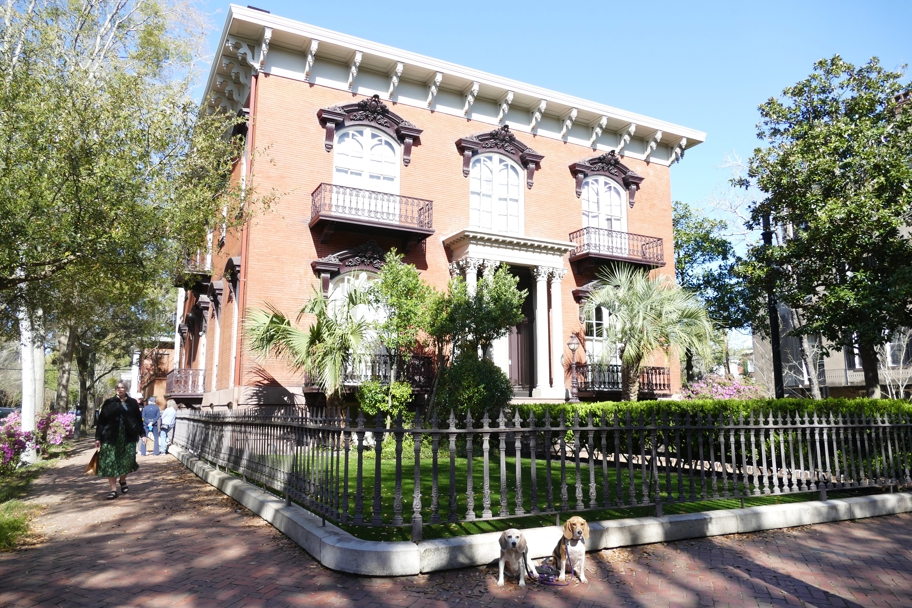

This house belonged to Johnny Mercer's great-grandfather. Of the pictures I took, this best illustrates the look of the historic residential district south of Bay Street. It is gridded with twenty-some park squares, every home within a block of one of them.
Georgia Halley Beagle Savannah Wallace Beagle